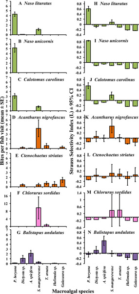
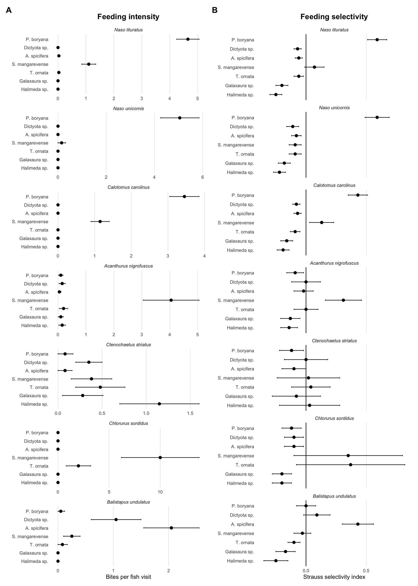
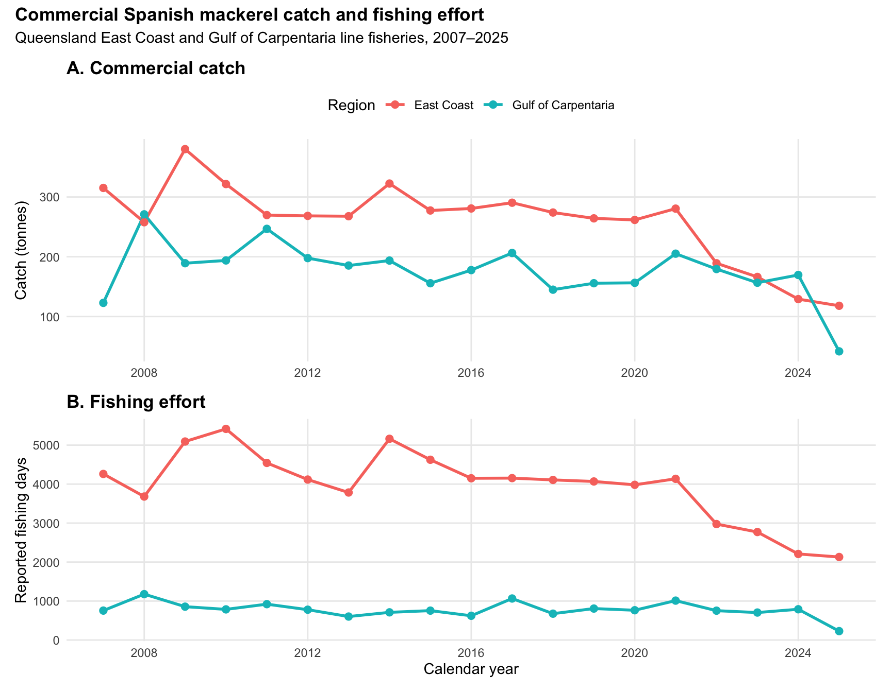

Workshop 3
Extracting ecological signals from noisy systems
Exercise 1: Plot Deconstruction
Selected Data
Figure 2 from Selective consumption of macroalgal species by herbivorous fishes suggests reduced functional complementarity on a fringing reef in Moorea, French Polynesia (Sura et al., 2021)
Visual Critique
Message: The figure demonstrates species-specific feeding by herbivorous reef fishes, with different fishes showing distinct consumption rates and selectivity among macroalgal taxa. This suggests limited functional redundancy among herbivores and indicates that individual fish species may have different roles in regulating macroalgal communities.
Flaws: The use of mean ± SE bar charts obscures the distribution of the underlying observations, including potential variation, zero-inflation and outliers in feeding behaviour. Points and uncertainty intervals, ideally accompanied by the raw observations, would represent the data more transparently. Second, dividing the results among 14 small panels makes comparisons among fish and macroalgal species difficult. Repeated axes, labels and panel headings create visual clutter, while the rotated macroalgal labels appear only at the bottom of the figure. The colour scheme also provides largely redundant information because colour distinguishes fish that are already separated and labelled by panel.
Reconstructed Data
The reconstructed dataset contains the mean feeding intensity and uncertainty for each combination of seven fish species and seven macroalgal taxa. Feeding intensity is represented as mean bites per fish visit ± SE, while feeding selectivity is represented by the mean Strauss selectivity index and 95% confidence interval.
View reconstructed data table
| Fish species | Macroalga | Bites per visit (mean ± SE) | Strauss selectivity (mean, 95% CI) |
|---|---|---|---|
| Naso lituratus | P. boryana | 4.65 ± 0.40 | 0.59 (0.51, 0.67) |
| Naso lituratus | Dictyota sp. | 0.00 ± 0.00 | -0.07 (-0.10, -0.04) |
| Naso lituratus | A. spicifera | 0.03 ± 0.04 | -0.06 (-0.09, -0.03) |
| Naso lituratus | S. mangarevense | 1.10 ± 0.25 | 0.07 (-0.01, 0.15) |
| Naso lituratus | T. ornata | 0.03 ± 0.04 | -0.06 (-0.10, -0.02) |
| Naso lituratus | Galaxaura sp. | 0.00 ± 0.00 | -0.20 (-0.25, -0.15) |
| Naso lituratus | Halimeda sp. | 0.00 ± 0.00 | -0.25 (-0.30, -0.20) |
| Naso unicornis | P. boryana | 5.05 ± 0.80 | 0.59 (0.49, 0.69) |
| Naso unicornis | Dictyota sp. | 0.00 ± 0.00 | -0.11 (-0.16, -0.06) |
| Naso unicornis | A. spicifera | 0.00 ± 0.00 | -0.08 (-0.12, -0.04) |
| Naso unicornis | S. mangarevense | 0.15 ± 0.16 | -0.09 (-0.14, -0.04) |
| Naso unicornis | T. ornata | 0.00 ± 0.00 | -0.09 (-0.14, -0.04) |
| Naso unicornis | Galaxaura sp. | 0.00 ± 0.00 | -0.18 (-0.23, -0.13) |
| Naso unicornis | Halimeda sp. | 0.00 ± 0.00 | -0.22 (-0.27, -0.17) |
| Calotomus carolinus | P. boryana | 3.45 ± 0.40 | 0.43 (0.35, 0.51) |
| Calotomus carolinus | Dictyota sp. | 0.00 ± 0.00 | -0.08 (-0.11, -0.05) |
| Calotomus carolinus | A. spicifera | 0.00 ± 0.00 | -0.07 (-0.10, -0.04) |
| Calotomus carolinus | S. mangarevense | 1.15 ± 0.25 | 0.13 (0.03, 0.23) |
| Calotomus carolinus | T. ornata | 0.00 ± 0.00 | -0.09 (-0.13, -0.05) |
| Calotomus carolinus | Galaxaura sp. | 0.00 ± 0.00 | -0.16 (-0.21, -0.11) |
| Calotomus carolinus | Halimeda sp. | 0.00 ± 0.00 | -0.19 (-0.24, -0.14) |
| Acanthurus nigrofuscus | P. boryana | 0.10 ± 0.08 | -0.09 (-0.16, -0.02) |
| Acanthurus nigrofuscus | Dictyota sp. | 0.15 ± 0.11 | 0.00 (-0.12, 0.12) |
| Acanthurus nigrofuscus | A. spicifera | 0.05 ± 0.06 | -0.02 (-0.10, 0.06) |
| Acanthurus nigrofuscus | S. mangarevense | 4.05 ± 1.00 | 0.31 (0.16, 0.46) |
| Acanthurus nigrofuscus | T. ornata | 0.20 ± 0.15 | 0.00 (-0.10, 0.10) |
| Acanthurus nigrofuscus | Galaxaura sp. | 0.10 ± 0.09 | -0.13 (-0.21, -0.05) |
| Acanthurus nigrofuscus | Halimeda sp. | 0.15 ± 0.12 | -0.14 (-0.21, -0.07) |
| Ctenochaetus striatus | P. boryana | 0.08 ± 0.09 | -0.12 (-0.22, -0.02) |
| Ctenochaetus striatus | Dictyota sp. | 0.35 ± 0.15 | 0.00 (-0.18, 0.18) |
| Ctenochaetus striatus | A. spicifera | 0.08 ± 0.08 | -0.10 (-0.20, 0.00) |
| Ctenochaetus striatus | S. mangarevense | 0.38 ± 0.23 | 0.02 (-0.24, 0.28) |
| Ctenochaetus striatus | T. ornata | 0.48 ± 0.28 | 0.04 (-0.12, 0.20) |
| Ctenochaetus striatus | Galaxaura sp. | 0.28 ± 0.23 | -0.08 (-0.28, 0.12) |
| Ctenochaetus striatus | Halimeda sp. | 1.15 ± 0.45 | 0.03 (-0.22, 0.28) |
| Chlorurus sordidus | P. boryana | 0.00 ± 0.00 | -0.12 (-0.20, -0.04) |
| Chlorurus sordidus | Dictyota sp. | 0.00 ± 0.00 | -0.10 (-0.18, -0.02) |
| Chlorurus sordidus | A. spicifera | 0.00 ± 0.00 | -0.10 (-0.18, -0.02) |
| Chlorurus sordidus | S. mangarevense | 10.00 ± 3.80 | 0.35 (-0.10, 0.80) |
| Chlorurus sordidus | T. ornata | 2.00 ± 1.20 | 0.37 (-0.08, 0.82) |
| Chlorurus sordidus | Galaxaura sp. | 0.00 ± 0.00 | -0.20 (-0.28, -0.12) |
| Chlorurus sordidus | Halimeda sp. | 0.00 ± 0.00 | -0.20 (-0.28, -0.12) |
| Balistapus undulatus | P. boryana | 0.05 ± 0.06 | 0.00 (-0.08, 0.08) |
| Balistapus undulatus | Dictyota sp. | 1.05 ± 0.45 | 0.09 (-0.02, 0.20) |
| Balistapus undulatus | A. spicifera | 2.05 ± 0.50 | 0.43 (0.30, 0.56) |
| Balistapus undulatus | S. mangarevense | 0.25 ± 0.15 | -0.03 (-0.10, 0.04) |
| Balistapus undulatus | T. ornata | 0.08 ± 0.09 | -0.10 (-0.15, -0.05) |
| Balistapus undulatus | Galaxaura sp. | 0.00 ± 0.00 | -0.17 (-0.25, -0.09) |
| Balistapus undulatus | Halimeda sp. | 0.00 ± 0.00 | -0.25 (-0.35, -0.15) |
Note: Values are approximate summary statistics manually extracted from Figure 2 of Sura et al. and do not represent the authors’ original raw observations. Bites are presented as mean ± SE and Strauss selectivity as mean (95% CI).
Figure Redesign
The figure was redesigned to improve comparisons among fish species and macroalgal taxa while reducing visual clutter. Bars were replaced with points and horizontal uncertainty intervals, cleaning it up while retaining information about the estimated means and their uncertainty. Macroalgal names were moved to the y-axis and abbreviated to improve readability, and the redundant colour scheme was removed.
Feeding intensity and selectivity were retained as separate panels because they represent different ecological information. Feeding-intensity panels use independent x-axis scales to make within-species feeding patterns visible despite large differences in bite rates among fishes. In contrast, the selectivity panels retain a common x-axis scale and a zero reference line, allowing direct comparison among species. Positive Strauss selectivity values indicate selection for a macroalga, whereas negative values indicate avoidance.

Figure 1. Redesigned visualisation of feeding intensity and macroalgal selectivity among seven herbivorous reef fishes. (A) Points represent mean bites per fish visit and horizontal error bars represent ± SE. Note that x-axis scales vary among fish species to emphasise within-species feeding patterns. (B) Points represent mean Strauss selectivity indices and horizontal error bars represent 95% confidence intervals. The vertical line at zero represents neutral selection; positive values indicate selection and negative values indicate avoidance. Data are approximate values manually reconstructed from Figure 2 of Sura et al.
Reflection
The redesign makes species-specific feeding patterns more apparent while preserving the distinction between feeding intensity and selectivity. In particular, the shared selectivity scale and zero reference line make differences in preference and avoidance easier to interpret across fish species. Replacing bars with points also reduces visual clutter and places greater emphasis on the estimates and their uncertainty. However, because the original raw observations were unavailable, the redesign cannot address the loss of information caused by presenting only summary statistics. Access to the original fish-visit-level data would allow the underlying distributions and variation in feeding behaviour to be visualised directly.
Exercise 2: Queensland Fisheries Data Discovery Challenge
Code
qfish_raw <- read_csv(
"../data/workshop3/commercial_fishing_species_raw.csv"
)
glimpse(qfish_raw)
names(qfish_raw)
# Check the different reporting periods in the dataset
# QFISH contains both calendar-year and financial-year records
qfish_raw %>%
count(YearType)
# ---- Clean the raw data ----
qfish <- qfish_raw %>%
filter(YearType == "Calendar") %>% # Use calendar-year records only
select(
Fishery, # Keep only variables relevant to the
Region, # catch and effort analysis
Year,
SpeciesCommonName,
Licences,
Days,
Catch_Kg,
Catch_T
)
glimpse(qfish)
# Temporal coverage of the dataset
range(qfish$Year, na.rm = TRUE)
# Number of records available for each year
qfish %>%
count(Year) %>%
arrange(Year)
# ---- Explore species available for analysis ----
qfish %>%
count(SpeciesCommonName, sort = TRUE) %>%
print(n = 50)
qfish %>%
filter(str_detect(
SpeciesCommonName,
regex("coral trout", ignore_case = TRUE)
)) %>%
distinct(
Fishery,
Region,
SpeciesCommonName
) %>%
arrange(
SpeciesCommonName,
Region
)
# Extract Spanish mackerel records as a study species
spanish_mackerel <- qfish %>%
filter(SpeciesCommonName == "Mackerel - spanish")
spanish_mackerel %>%
distinct(
Fishery,
Region
)
spanish_mackerel %>%
group_by(Fishery, Region) %>%
summarise(
first_year = min(Year),
last_year = max(Year),
n_years = n_distinct(Year),
.groups = "drop"
)
spanish_mackerel %>%
select(
Fishery,
Region,
Year,
Catch_T,
Days,
Licences
) %>%
arrange(Region, Year) %>%
print(n = 100)
# ---- Create the final analysis dataset ----
mackerel_line <- qfish %>%
filter(
SpeciesCommonName == "Mackerel - spanish",
Fishery == "Line",
Region %in% c("East Coast", "GOC")
) %>%
mutate(
Year = as.numeric(Year),
Region = recode(
Region,
"GOC" = "Gulf of Carpentaria"
)
) %>%
filter(Year <= 2025) %>%
arrange(Region, Year)
# ---- Plot commercial catch ----
p_catch <- ggplot(
mackerel_line,
aes(
x = Year,
y = Catch_T,
colour = Region
)
) +
geom_line(linewidth = 1) +
geom_point(size = 2.2) +
scale_x_continuous(
breaks = seq(2008, 2024, by = 4)
) +
labs(
title = "A. Commercial catch",
x = NULL,
y = "Catch (tonnes)",
colour = "Region"
) +
theme_minimal(base_size = 11) +
theme(
plot.title = element_text(face = "bold"),
panel.grid.minor = element_blank(),
legend.position = "top"
)
# ---- Plot fishing effort ----
p_effort <- ggplot(
mackerel_line,
aes(
x = Year,
y = Days,
colour = Region
)
) +
geom_line(linewidth = 1) +
geom_point(size = 2.2) +
scale_x_continuous(
breaks = seq(2008, 2024, by = 4)
) +
labs(
title = "B. Fishing effort",
x = "Calendar year",
y = "Reported fishing days",
colour = "Region"
) +
theme_minimal(base_size = 11) +
theme(
plot.title = element_text(face = "bold"),
panel.grid.minor = element_blank(),
legend.position = "top"
)Management question: How have reported commercial Spanish mackerel catches and fishing effort changed between Queensland’s East Coast and Gulf of Carpentaria line fisheries from 2007 to 2025?
Commercial catch records were obtained from the Queensland Fisheries QFISH Commercial Fishing Annual Species Summary dataset. Calendar-year records for Spanish mackerel were filtered to the Line fishery and the East Coast and Gulf of Carpentaria regions. Statewide (QLD) records were excluded because they aggregate regional catches and would therefore duplicate observations included in the regional data. Records for 2026 were also excluded because the current year represents an incomplete reporting period.
Code
# Commercial catch
p_catch <- ggplot(
mackerel_line,
aes(
x = Year,
y = Catch_T,
colour = Region
)
) +
geom_line(linewidth = 1) +
geom_point(size = 2.2) +
scale_x_continuous(
breaks = seq(2008, 2024, by = 4)
) +
labs(
title = "A. Commercial catch",
x = NULL,
y = "Catch (tonnes)",
colour = "Region"
) +
theme_minimal(base_size = 11) +
theme(
plot.title = element_text(face = "bold"),
panel.grid.minor = element_blank(),
legend.position = "top"
)
# Fishing effort
p_effort <- ggplot(
mackerel_line,
aes(
x = Year,
y = Days,
colour = Region
)
) +
geom_line(linewidth = 1) +
geom_point(size = 2.2) +
scale_x_continuous(
breaks = seq(2008, 2024, by = 4)
) +
labs(
title = "B. Fishing effort",
x = "Calendar year",
y = "Reported fishing days",
colour = "Region"
) +
theme_minimal(base_size = 11) +
theme(
plot.title = element_text(face = "bold"),
panel.grid.minor = element_blank(),
legend.position = "top"
)
# Combine into final figure
final_mackerel_plot <-
(p_catch / p_effort) +
plot_layout(guides = "collect") +
plot_annotation(
title = "Commercial Spanish mackerel catch and fishing effort",
subtitle = "Queensland East Coast and Gulf of Carpentaria line fisheries, 2007–2025"
) &
theme(
legend.position = "top",
plot.title = element_text(face = "bold")
)
final_mackerel_plot
Figure 1. Commercial Spanish mackerel catch and fishing effort in Queensland line fisheries, 2007–2025. (A) Annual reported commercial catch and (B) reported fishing effort for the East Coast and Gulf of Carpentaria regions. Data were obtained from the Queensland Fisheries QFISH Commercial Fishing Annual Species Summary dataset. Statewide (QLD) records were excluded to avoid duplication of regional totals.
Reported Spanish mackerel catch in the East Coast line fishery declined substantially after 2021, coinciding with a marked reduction in reported fishing effort. In comparison, Gulf of Carpentaria catch and effort were relatively stable through most of the time series. Because commercial catch is influenced by fishing effort as well as fish availability, these trends should not be interpreted as direct measures of Spanish mackerel abundance. The low Gulf of Carpentaria values in 2025 should be interpreted cautiously, as reporting completeness was not independently assessed.